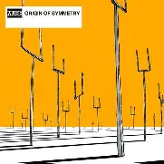
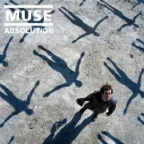
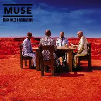

Discografía
Estos son algunos de los álbumes más representativos de esta banda, con enlace directo a YouTube para escuchar el disco completo.
Álbumes Destacados

Origin of Symmetry (2001)
- Incluye clásicos como Plug In Baby, New Born y Hyper Music
Escuchar en YouTube

Absolution (2003)
Un álbum más oscuro y temáticamente profundo, con influencias apocalípticas
Escuchar en YouTube

Black Holes and Revelations (2006)
Mezcla rock alternativo con electrónica, funk y pop, mostrando su versatilidad.
Escuchar en YouTube